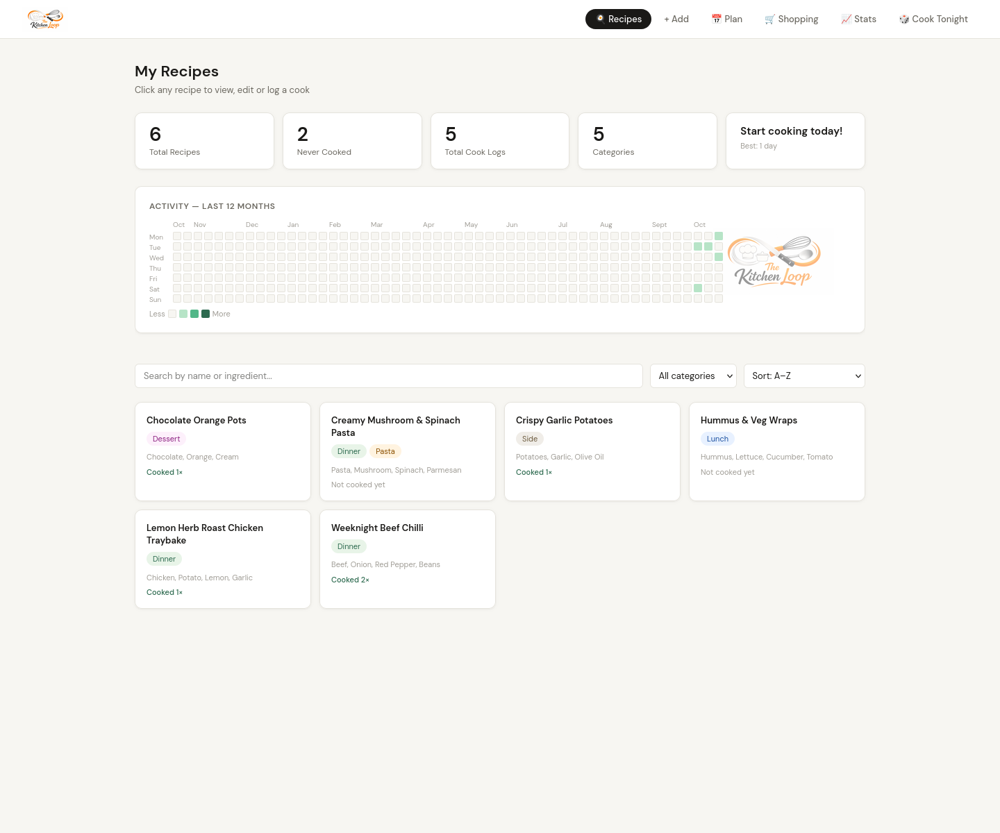
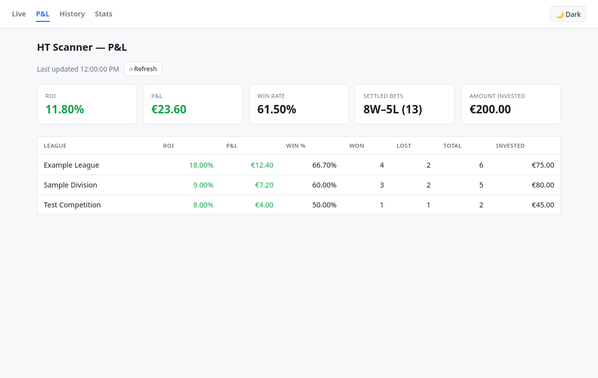

01Personal web application

The Kitchen Loop Community Edition
A self-hosted recipe management and meal planning app that brings recipes, cooking logs, dinner plans and shopping lists into one place.
Built from a household problem, then hardened into a local-first community edition with documented setup paths for Linux, macOS and Windows.
Explore the Community Edition ↗
02Data analytics capstone

F1 Analysis
Who performed best without winning the championship? An analysis of Formula 1 non-champions from 2005–2025, using data from the Jolpica F1 API.
The public notebook explores podium rates, performance against constructor averages and teammate comparisons, with supporting charts and datasets.
Explore the public analysis ↗
03Python automation project

HT Opportunity Scanner
A personal football betting-exchange opportunity scanner that identifies predefined market conditions.
Built with Python, Betfair API integration, odds-based filters and Telegram alerts, with the portfolio snapshot documenting the engineering decisions and lessons learned.
- Python
- Betfair API
- Telegram
Explore the project ↗